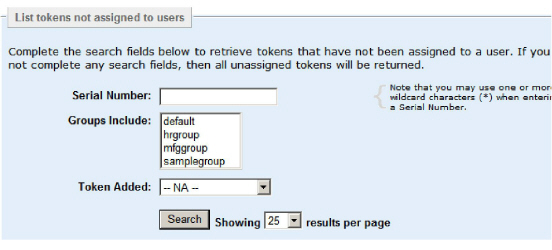

|
IdentityGuard Server 11.0 Administration Guide |
|
IdentityGuard Server 11.0 Administration Guide |
In large enterprise or consumer deployments, a generalized search can easily return thousands of tokens—far more than the Administration interface can display on one page. When searching for tokens, include as many search options as possible to reduce the search results to the exact records you need.
You can set the number of records to display per page using the Showing results per page option. The maximum is 100.
To get a count of unassigned tokens
1. Log in to the Entrust IdentityGuard Administration interface as the administrator.
 On the
Windows computer where Entrust IdentityGuard is installed
On the
Windows computer where Entrust IdentityGuard is installed
2. Complete one of the following steps:
● Generate an unassigned token report. See To create reports in the Administration interface.
or
● In the Master user shell, enter the following command:
token list -countOnly
For more information, see Using the Master user shell.
To find information about unassigned tokens
3. Log in to the Entrust IdentityGuard Administration interface as the administrator.
On the
Windows computer where Entrust IdentityGuard is installed
2. Click Tokens from the menu bar.
3. From the Tokens page, click the List Unassigned Tokens tab.

4. To retrieve a list of unassigned tokens, you can search using one or more of the following options:
● Serial Number. To locate a particular token, enter the serial number of the token. You may also use the wildcard character (*). To retrieve all serial numbers, leave this field blank. Serial numbers can consist of letters, numbers and hyphens, but no other characters.
Note: When you
enter a token serial number, any number with less than 10 digits is prefixed
with zeros. For example, 7891234 becomes 0007891234. Any hyphens used
as punctuation are stripped out. For example, 7644483-8 becomes 0076444838.
There is an exception to the above rules if you use the wildcard character
to find serial numbers. For example, if you want serial numbers that start
with 007, you must enter 007* not 7*.
● Groups Include. Search for tokens based on their assigned group. Select one or more groups from the list. Hold down the Ctrl key to select more than one group.
● Token Added. To locate tokens that were loaded within a specified time frame (1, 7 30, or 365 days), select one of the ranges in the drop-down list.
The Custom date range option lets you select a From and To date. Use the drop-down lists to select the date, month, and year, or click the calendar icon to select the date.
If you do not want to search by any criteria, select N/A.
5. Optional. From the Showing results per page drop-down list, select the number of search results you want to see per page.
6. Click Search.
The Search Results page appears.
Tip: To change the sort order of records in the Search Results page, click the arrow in the first column header to sort the records by serial number.
7. Click any token serial number. This opens the Token Details page where you can view further details or edit token information (see Modify unassigned tokens).